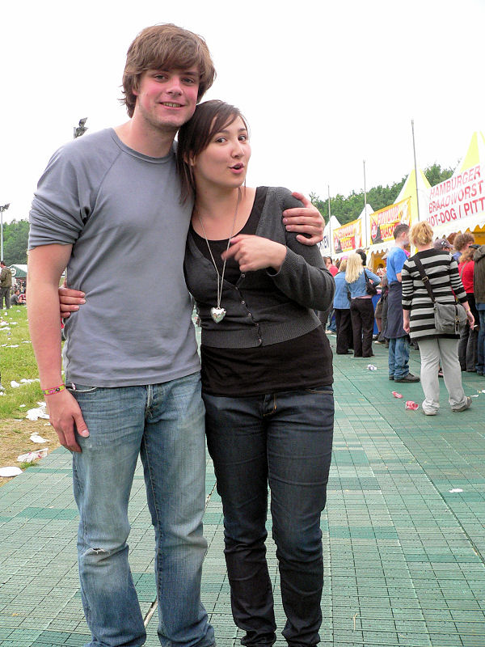
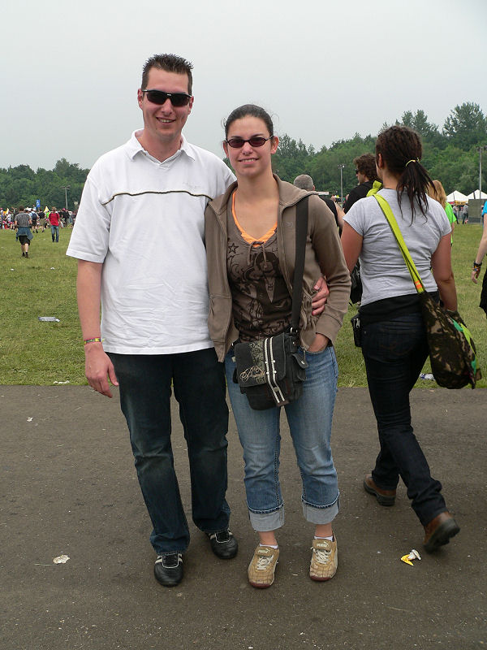
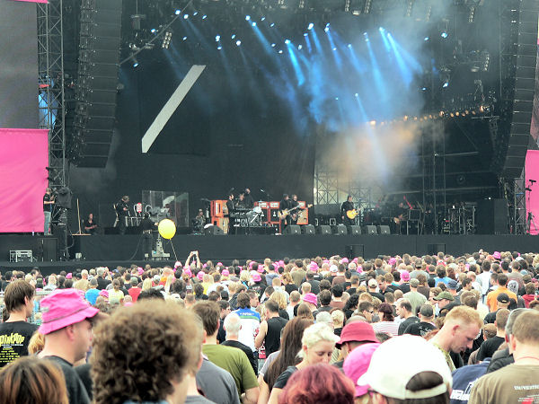
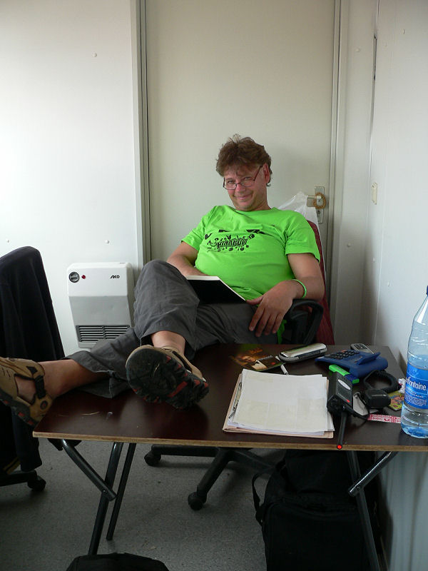
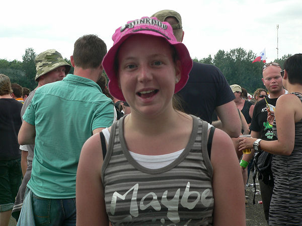
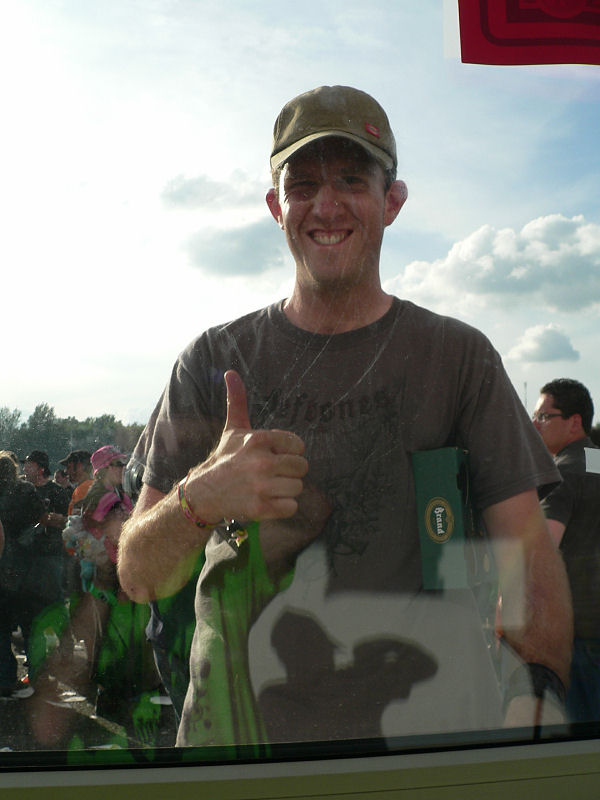
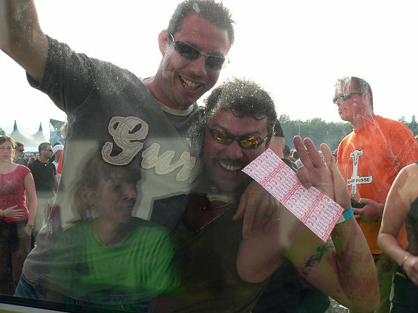

Het traditionele verzamelpunt voor vele medewerkers aan Pinkpop met het in
aanbouw zijnde hotel op de
achtergrond.
Ook al traditie op camping A is de aanwezigheid van...
... de brui va Vols.
:-)))
Deze kekke brildrager met casual blikje Brand is een van de eerste Rodafans
die we ontmoeten.
Linksmenschen uit Hamburg op Pinkpop.
Lei, met prachtig shirt begint met 25 bier.
Bij Eddy slaat de camera op tilt.... Toch fijn dat je even wilde poseren ;-)
En alweer een Rodafan!
Bij de rock-bitches van SAT2D ontwaren we festival- en Roda die-hard...
... Bube.
Flogging Molly: Opgefokte folklore-pop.
Halverwege het terrein een grote Roda-familie met de altijd hip geklede
Verena en...
... de immer hip gecoiffeerde Kevin.
De vriendin in stemmig pinkpop-rose.

Pop-eye Theo, de man met de meeste Hyvesvriendinnen en partner.
R-O-D-A !!!
Beavis schiet terug.
Rick... ja er lebt noch! Keer terug naar Z16 kerel, je hoort er thuis.
Drie vriendinnen uit de regio Brunssum. Jullie hebben een prijs gewonnen,
mail koempel@koempel.nl
Marcel is weg bij Roda, maar niet heus; deze wissel wordt u aangeboden door
Flexpoint.
De popie-jopie zanger van Incubus gaat erbij zitten.
SBC Jos met compagnon.
De wereldberoemde Hanebretboys.
(foto: Jean Mertens)

Olaf met enthousiaste vriendin.
Als Metallica begint is het een drukte van belang. De bierpompen trekken het
niet meer en een plekje
vooraan kun je vergeten.
Het maakt niet uit voor Jacqueline die genoegen neemt met een
faraway-standplaats.
Marc heeft ook zijn vriend mee.
Tummeke met vrouwtje.
Dag 2:
Het is nog ochtend als Marco en Danniëlle aan de kassa verschijnen.
En even later deze goedgeluimde Rodafiel.

Roda-fans uit Z11.
Air Traffic was goed te doen maar de betere optie was...
... Blood Red Shoes. Zeer energiek!
De op één na grootste sponsor van Alfa-bier, Reinier, kan goed leven met een
plaatje voor de
Brandbierpomp.

Een vrij saai optreden van het enigszins overgewaardeerde Moke.
Editors. Leuke band voor even. Daarna gaan de liedjes op elkaar lijken.
PW heeft het naar zijn zin.
En alweer Z16-mensen.
Ramon, die al in Oranje-sferen verkeert.
De Postert-koempels.
Dag 3:
Spar is al vroeg aan het bier.
Maurice, nog niet echt wakker.
Fiction Plane klonk een beetje naar The Police wat niet verwonderlijk is met
een zanger die de zoon van
Sting is. Prima band!
Nog wat groeten ut postert.
Eerste prijs voor de best geklede Rodasupporter op Pinkpop 2008.
Romero tussen enkele andere casuals.

Immer dabei: Pascal, keurig gekleed in koempel-shirt.
Op de 3FM-Stage ging het duchtig los met Cavalera Conspiracy.
Deze blijen komen uit oss en wilden per se op de site. Mailt u maar voor de
photo in grootformaat.

Zo zag u Pinkpop nog nooit. Dit is backstage bonnenverkoopkassa Karel 8.
Rodafan zonder naam (sorry, vergeten).

Inge JC, de begeleidster van Ramon. Is deze foto goed Inge???
Ramon meldt zich present.
Dit jaar slechts enkele (ex-) Broekies gezien. Bij deze (en nog bedankt voor
jullie enthousiaste yell).
Alanis was nog goed bij stem maar niet van figuur.

Het grote broertje van David D. presenteert zijn aanstaande bruid.
SBC Maurice.
Patrick voor het eerst in RJC-fans op PP.

Barrysaurus, ook al uit Boches.
En alweer een Z16-supporter. Bijna dat hele vak was op PP.
De compagnon van Jacqueline die al eerder getraceerd werd.

SBC Jos stond al eerder op de foto maar hier heeft hij een ander vriendje
(en een full house).
Een van de betere acts: Queens Of The Stone Age.
Rage Against The Machine klonk eender als lang geleden. Deze afsluiter liet
een kanonnenvol terrein
compleet ontploffen.
Zelf ook nog even integreren in deze serie (photographed by Indo-Eddy).
Giga-sfeer. Volgens Jan Smeets was dit de beste Pinkpop aller tijden. Dat is
discutabel, maar zeker is
dat het stampenvol was en muzikaal dik in orde.
Volgend jaar is de 40e editie gewoon weer met pinksteren.
Niet alle Rodamensen vielen binnen het bereik van de lens,
stuur gerust je eigen ervaringen door.